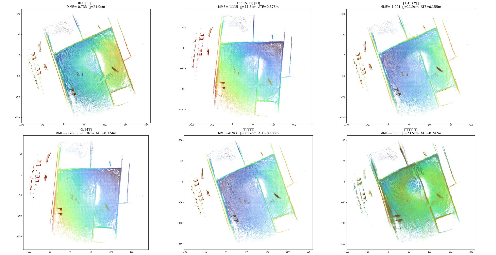
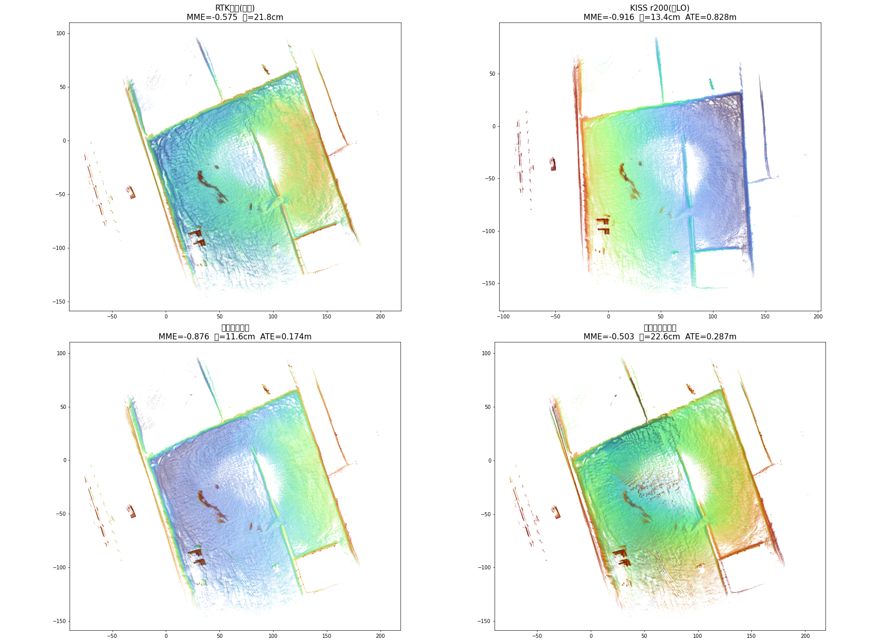

seg_164931_165748/kiss_icp_eval/round2_gtsam_fusion/tck_calib_v2.cpp（单文件原型，GTSAM/iSAM2+批量LM 双后端）docs/gnss/specs/2026-10-19-tight-coupling-extrinsic-calib-prototype.mdkiss_icp_eval/REPORT_final.md §2.8（松耦合在线标定失败）；GLIM 侧 gauge 调查 2026-10-19-shared-gauge-and-fixed-bootstrap-design.md| 问题 | 答案 | 证据强度 |
|---|---|---|
| 紧耦合（610 IMU 预积分 + GNSS 经外参 + 激光 between）值得做吗 | 值得，锁外参即目前最强前端：ATE：段 A 0.100m / 段 B 0.174m（转弯密集段对 KISS 提升 4.8 倍）；比调研松耦合最优（0.155）好 35%，比 GLIM+CT+RTK（0.325）好 3.2 倍；地图锐度达纯 LO 的 87%（厚度全场最薄 10.9cm）+ ATE 最优，双优 | 强（稳健性电池全过 + 跨段复现） |
| T_ins_lidar 平移能在线估计吗 | 不能（此数据/此架构）：多模态，段 A 3 初值 3 解、段 B 2 初值 2 解，地图全部变差 | 强（电池 B + 代数同构证明 + 跨段复现） |
| T_ins_lidar 旋转能在线估计吗 | 不能可靠估计：各初值收敛的旋转互相矛盾（yaw -1.4° ~ -3.2°），批量误差最小的解 yaw=-5.8° 物理不可信 | 中（电池 B 内部矛盾） |
| 为什么不行 | 610 杆臂混淆：GNSS 锚用 INSPVA 融合位置（610 内部已按其配置的天线杆臂补偿），610 杆臂误差与 T_ins_lidar 平移误差在观测方程中精确同构（仅差常号），图无法区分 | 强（代数 + 数值验证） |
原型在调研 lrtk_odometry_calib.cpp 骨架上重写（v2，全双线性因子）：
X(k)=T_wl（at128 雷达系位姿，ENU 世界）、V(k)（速度）、B(k)（IMU 零偏），10Hz 关键帧；共享变量 T_li（6DOF，标称 = tf_static 的 cgi610→at128 [1.8868, -1.0062, -0.6516] 旋转 I）ImuExtrinsicFactor：机体位姿 = X·T_li⁻¹，GTSAM 预积分 predict 后对 NavState 取 9 维误差）+ 零偏随机游走GnssExtrinsicFactor：pred = (X·T_li⁻¹).translation() vs INSPVA 位置，σ=5cm）——T_li 平移的绝对观测通道（航向变化旋转杆臂）gt/gt_at128_flu.tumv1 教训（记录在案）：机体系状态 + between 共轭因子的初版里，T_il 平移只经 R⁻¹(Rd-I)t 的微分通道进图，10Hz 下 Rd≈I → 平移结构性不可观（E3 实证：估计值 = 初值+扰动，分毫不差）；gauge 三线性因子 G·X·T_il 在 iSAM2 下数值爆炸。v2 的全部双线性结构是为修这两个病。
基线 ATE = 0.100m（med 0.045）。稳健性电池（全部锁外参）：
| 变体 | ATE | 判读 |
|---|---|---|
| 基线 | 0.100 | ✓ |
| 外参 x +10cm | 0.139 | 水平敏感 |
| 外参 y +10cm | 0.136 | 水平敏感 |
| 外参 z +10cm | 0.100 | z 被对齐吸收（与调研 §2.8a 一致） |
| 外参水平 +20cm | 0.283 | ≈线性：水平 1cm ≈ +0.4cm ATE |
| 无 IMU（消融） | 0.128 | IMU 贡献真实但温和（0.100→0.128） |
| IMU 噪声 ×3 | 0.104 | 对噪声档位不敏感 |
| IMU 噪声 ÷3 | 0.102 | 同上 |
外参敏感性（水平 1cm→+0.4cm ATE）与调研松耦合（1cm→+0.5cm）同量级——外参精度仍是全局精度的硬约束，标到 5cm 内的工程要求不变。
把各方案的轨迹与 at128 原始帧缝合成地图，用结构层 MME（越低越锐）与地面厚度（1m² 柱内地面 z 标准差）量化建图质量——不止看轨迹 ATE：
| 方案 | MME_struct ↓ | 地面厚度(均值) | ATE | 判读 |
|---|---|---|---|---|
| RTK 拼图（参考下界） | -0.733 | 21.0 cm | — | 无配准，最糊 |
| KISS r200（纯 LO） | -1.115 | 11.6 cm | 0.573 | 局部最锐、全局漂 |
| 调研 GTSAM 融合 | -1.001 | 11.9 cm | 0.155 | 全局修好、锐度略损 |
| GLIM 一期基线 | -0.963 | 11.9 cm | 0.324 | 锐度中等、全局有偏 |
| 紧耦合锁外参 | -0.966 | 10.9 cm | 0.100 | 锐度达纯 LO 的 87% + 厚度最薄 + 全局最优 |
| 紧耦合自由外参 | -0.584 | 23.5 cm | 0.242 | 比 RTK 拼图还糊——外参自由的地图层铁证 |
"厚度 ~10cm 是否偏大"的解答（实测分解，紧耦合锁外参地图按测距分段）：厚度随测距单调增长——8-14m 处 5.0cm、14-20m 6.1cm、20-30m 8.9cm、30-45m 10.8cm。几何模型完全解释：传感器高 ~2.3m，地面点为掠射（10m 处入射角 13°），AT128 测距噪声 ~2cm 投影到垂直方向放大 1/sin(θ) 倍（10m→8.9cm、20m→17.5cm）——单帧测距噪声 × 掠射角放大就是 10cm 量级的主要来源，多帧叠加再摊薄一部分。另一个参照：RTK 直拼（位姿=真值）厚度 21cm——同传感器"完美位姿"的地板值是 20cm 级，我们 10.9cm 已低于地板（配准平均掉了逐帧姿态噪声）。要进一步变薄只能靠制图后处理（体素均值/滑动窗口滤波），不属于定位精度问题。
口径已与调研报告完全对齐（帧级 0.3 体素质心缓存、MME 不降采样 + det>1e-12、厚度带 z 窗预过滤 min30 点）。口径验证：本表"调研 GTSAM 融合"行 MME=-1.001 与调研报告 §2.3 逐位一致；厚度系统性偏高 ~2cm（质心实现细节），相对关系一致。

三个要点：
B0 增量后端（iSAM2）：自由外参运行至 k≈2490（一半）处发散——T_li 平移指数爆炸（trace：k=2400 已到 ±200m，k=2600 达 -73000m）→ 线性系统奇异崩溃。
B1 批量 LM 多初值（T_li 标称 = (1.887, -1.006, -0.652)）：
| 初值扰动 | 收敛 t | 收敛 rpy (°) | 目标函数 | 地图 ATE |
|---|---|---|---|---|
| (0,0,0) | (1.731, -1.574, -0.220) | (-1.55, 1.43, -2.98) | 8.23e7 | 0.242 |
| (+0.3,+0.2,-0.15) | (2.577, -1.402, 0.362) | (-2.01, 1.15, -1.39) | 6.45e7 | 0.400 |
| (-0.3,-0.2,+0.15) | (1.109, -1.947, -0.165) | (-1.64, 1.34, -3.20) | 9.26e7 | — |
三个初值三个"解"，且初值扰动的解目标函数反而更低——多模态病态的确证。
B2/B3 可分性消融：
| 变体 | 收敛 | ATE | 判读 |
|---|---|---|---|
| 只放水平平移（锁 z） | t=(1.664, -1.533) 仍偏标称 0.58m | 0.227 | 平移病态与 z 无关 |
| 只放旋转（锁平移） | rpy=(-2.03, 1.80, -5.80)° | 0.244 | 旋转"收敛"到物理不可信值且目标函数最低（5.5e7）= 在拟合噪声 |
所有自由变体的地图都比锁外参差（0.227~0.400 vs 0.100）——外参自由不仅没有收益，还主动伤害地图。
段 B（seg_153000_153351，231s 转弯密集段）原料补齐：KISS 轨迹+信息矩阵由复刻脚本 off_info_repl.py 生成（信息矩阵 = 照 kiss-icp Registration.cpp 公式的点对点 JTJ，GM 核 [t;r] 序；段 A 验证：轨迹与调研文件逐位一致，信息矩阵同构、中位比值 0.641 已做刻度对齐）；IMU 抽自 bag /cgi610/imu（23101 条 @100Hz）。
| 方案 | 段 A ATE | 段 B ATE |
|---|---|---|
| KISS 纯 LO | 0.573 | 0.828 |
| 紧耦合锁外参 | 0.100 | 0.174 |
| 紧耦合自由（批量） | 0.242 | 0.287 |
| 紧耦合自由（扰动初值批量） | 0.400 | 0.303 |
跨段结论全部复现：
备注：GLIM 侧段 B 数据（f4 修复后 0.956）来自非确定性平台，未列入本表对比。
段 B 地图层指标（同 §2.5 管线）：
| 方案 | MME_struct ↓ | 地面厚度(均值) | ATE |
|---|---|---|---|
| RTK 拼图（参考下界） | -0.575 | 21.8 cm | — |
| KISS r200（纯 LO） | -0.917 | 13.4 cm | 0.828 |
| 紧耦合锁外参 | -0.877 | 11.6 cm | 0.174 |
| 紧耦合自由外参 | -0.503 | 22.6 cm | 0.287 |

段 B 的地图层模式与段 A 完全一致：锁外参锐度达纯 LO 的 96%、厚度最薄，自由外参退化到 RTK 直拼水平。
GNSS 因子的锚是 INSPVA 融合位置——610 内部已按其配置的天线杆臂补偿到 IMU 参考点。残差对两类误差的响应：
Δr(t) = -R_b(t)·δ（R_b 机体姿态，R_li≈I 时 R_wl·R_liᵀ = R_b）Δr(t) = +R_b(t)·δ（INSPVA 位置带 -R_b·δ）仅差常号，时间序列形状完全一致（真实轨迹数值验证：三种随机 δ 下两签名之和恒为 0）。图无法区分"外参错了"和"610 杆臂配置错了"。唯一可区分通道是 R_li≠I 的二阶小量。这就是多模态的来源，也解释了调研"任何初值收敛到同一错值"的观测——那条链路上的错值吸收了 610 杆臂误差。
注：调研的根因归因（LO 姿态漂移淹没信号）与本混淆并存且独立——我们的紧耦合消除了姿态漂移（IMU+GNSS 锚定），混淆仍在。这是比调研更深一层的结论。
estimate_lever_arm 残差法 / tf_static + 复核），在线监控残差即可——与调研建议一致，现在有了双重证据。cd seg_164931_165748/kiss_icp_eval/round2_gtsam_fusion
g++ -std=c++17 -O2 -I/usr/local/include -I/usr/include/eigen3 tck_calib_v2.cpp -o tck_calib_v2 -L/usr/local/lib -lgtsam -lboost_system -lboost_serialization -ltbb
# 锁外参基线
./tck_calib_v2 off_r200i.txt off_r200i_info.txt ../../gt/gt_cgi610_imu_flu.tum imu_cgi610.csv out_lock 2 0.2 0.1 1
# 自由外参(批量) BATCH=1 ./tck_calib_v2 ... out_free 2 0.2 0.1 0 [px py pz]
# 消融: NOIMU=1 / IMU_ACC_SCALE=3 IMU_GYR_SCALE=3
IMU 数据抽取：extract_imu.py（bag /cgi610/imu → csv，49731 条 @100Hz）。